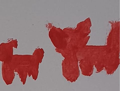

ConTextos
ConTextos es una organización y centro educativo que impulsa la lectura, el arte, la escritura creativa y el diálogo. Con ellos participé en el programa “Soy autor, soy autora: Un viaje sincero al origen”.
Escribí un libro dedicado a un ser querido, usando metáforas y símiles, y un poema sobre mí. Pinté yo mismo las ilustraciones de cada página. El programa cerró con una exposición de todos los libros.
Fue una experiencia que me permitió expresarme a través de la palabra y del dibujo al mismo tiempo, y mirar mi propia historia desde otra perspectiva. Ver el libro terminado y expuesto junto a los de otros participantes fue muy especial.
Mi rol: autor, poeta e ilustrador.
